ИСПОЛНИТЕЛЬНЫЙ
КОМИТЕТ
ЛЕНИНГРАДСКОГО ГОРОДСКОГО СОВЕТА
ДЕПУТАТОВ ТРУДЯЩИХСЯ
(ИСПОЛКОМ ЛЕНГОРСОВЕТА)
ВРЕМЕННАЯ ИНСТРУКЦИЯ
ПО УСТРОЙСТВУ ФУНДАМЕНТОВ
ОКОЛО СУЩЕСТВУЮЩИХ
ЗДАНИЙ
(ОСОБЕННОСТИ ИЗЫСКАНИЙ,
ПРОЕКТИРОВАНИЯ И СТРОИТЕЛЬСТВА)
ВСН 401-01-1-77
ИСПОЛКОМ ЛЕНГОРСОВЕТА
Утверждена
Решением Исполкома Ленгорсовета
от 24 февраля 1977 г. № 185-Р
ЛЕНИНГРАД - 1977
Настоящая «Временная инструкция по устройству фундаментов около существующих зданий» разработана по заданию Исполкома Ленгорсовета (Решение Исполкома № 434 от 6 июня 1975 г.) Ленинградским Ордена Трудового Красного Знамени инженерно-строительным институтом (кафедра «Основания, фундаменты и механика грунтов»). Авторами инструкции являются: засл. деятель науки и техники РСФСР доктор техн. наук, проф. Б.И. Далматов, канд. техн. наук, доцент С.Н. Сотников, канд. техн. наук, ассистент А.А. Собенин. В основу инструкции положены теоретические разработки и данные натурных наблюдений по многим объектам строительства в Ленинграде, явившиеся результатами исследований, которые проводились ЛИСИ по хоздоговорам с проектным институтом ЛенНИИпроект, Главленинградстроем, ГлавАПУ Ленгорисполкома в период 1963 - 77 годов. В проведении этих работ принимали участие: канд. техн. наук А.Т. Иовчук, канд. техн. наук, доцент В.Г. Науменко, инженеры: В.П. Вершинин, Т.М. Зверевич, А.А. Соловьев, Ряд положений настоящей инструкции, касающихся учета динамических воздействий на здание и основание, сформулирован с учетом «Инструкции по забивке свай вблизи зданий и сооружений» ВСН 358-76 ММСС СССР, составленной институтом ВНИИГС.
Главные рецензенты инструкции: канд. техн. наук С.Д. Химунин (НИИ АКХ им. акад. Панфилова), доктор техн. наук, профессор Е.А. Сорочан (НИИОСП им. акад. Герсеванова Госстроя СССР).
|
Исполнительный комитет Ленинградского городского совета депутатов трудящихся |
Ведомственные строительные нормы |
ВСН 401-01-1-77 |
|
Исполком Ленгорсовета |
||
|
Временная инструкция по устройству фундаментов около существующих зданий |
Разработана впервые |
1.1. Временная инструкция по устройству фундаментов около существующих зданий должна соблюдаться всеми организациями при проведении изысканий, разработке проектов и возведении фундаментов под здания, строящиеся около существующих зданий в Ленинграде и его пригородных районах. Инструкция разработана в развитие действующих глав СНиПа на изыскания, проектирование и строительство фундаментов, а также «Временных технических указаний по устройству фундаментов гражданских зданий в Ленинграде и его пригородных районах» (ВТУ 401-01-388-71).
1.2. Инструкция также должна соблюдаться при возведении длинных зданий в несколько очередей. Возведение каждой последующей очереди должно рассматриваться как строительство нового здания около существующего.
1.3. Инструкция распространяется и на случаи, когда расстояние l между краями возводимого фундамента и фундамента существующего здания отвечает условию
где Н - мощность толщи грунтов, уплотняющихся под воздействием нагрузок, которые будут передаваться проектируемым сооружением.
1.4. Выбор участка застройки должен производиться с учетом материалов инженерно-геологических изысканий, выполненных до возведения существующих соседних зданий и сооружений, хранящихся в архивах, а также с учетом степени уплотненности грунтов основания ранее существовавшими на данном участке сооружениями Если грунты основания относятся к сильно- или среднесжимаемым по п. 1.4 ВТУ 401-01-388-71, то в экономических обоснованиях проектов требуется учитывать удорожание строительства, связанное с осуществлением мероприятий, направленных на обеспечение целостности конструкций существующих зданий от повреждений, вызываемых застройкой соседних участков
1.5. Проекты зданий, располагаемых вблизи существующих зданий и сооружений, в которых не предусмотрены эффективные меры, направленные на предотвращение деформаций конструкций ранее возведенных домов, не могут быть реализованы на практике как недоработанные
|
Утверждена Решением Исполкома Ленгорсовета от 24 февраля 1977 г. № 185-Р |
Срок введения в действие |
2.1. Инженерные изыскания на участке строительства и примыкающей к нему площади, занятой зданиями и сооружениями, должны включать работы по обследованию фундаментов и надземных конструкций существующих зданий, геодезические работы и инженерно-геологические изыскания, содержание которых имеет специфические особенности, обусловленные поставленной задачей.
2.2. Инженерно-геологические исследования грунтов оснований проектируемых зданий и сооружений должны проводиться в соответствии с требованиями действующих глав СНиПа, государственных стандартов и других нормативных документов по инженерным изысканиям и исследованиям грунтов для строительства, а также с учетом конструктивных и эксплуатационных особенностей зданий и сооружений как проектируемых, так и существующих, расположенных в пределах зоны уплотнения грунта нагрузками, передаваемыми новым зданием или сооружением.
2.3. Результаты инженерно-геологических изысканий должны содержать данные, необходимые для решения вопросов:
а) выбора типа основания и конструкции фундаментов, включая определение глубины заложения и размеров фундаментов с учетом прогноза возможных изменений инженерно-геологических и гидрогеологических условий, в том числе свойств грунтов в процессе строительства и эксплуатации;
б) выбора (в случае необходимости) методов улучшения свойств грунтов оснований строящегося и существующих соседних зданий и сооружений;
в) выбора способа производства работ по откопке котлованов, креплению их стенок и возведению фундаментов, обеспечивающего сохранение структуры грунтов в основании существующих зданий и исключающего развитие недопустимых перемещений их фундаментов;
г) расчета дополнительных осадок существующих соседних зданий с учетом фактического состояния уплотненности грунтов в их основании, а также расчета осадок вновь проектируемого здания, который должен выполняться с повышенной (по сравнению с обычным проектированием) степенью достоверности.
Глубина бурения скважин при изысканиях должна соответствовать требованиям действующих нормативных документов. Однако 20 % скважин, но не менее двух, должно быть пробурено до слоя малосжимаемого грунта (с модулем деформации Е ³ 200 кгс/см2).
2.4. Дополнительно, для решения вопросов по пунктам 2.3. в и 2.3. г, при проведении инженерно-геологических изысканий необходимо:
а) выполнить испытания грунтов с учетом фактического напряженного состояния основания и его последующего изменения в результате проектируемого строительства;
б) определить возможность дополнительного уплотнения грунтов основания существующих зданий при воздействии на грунт динамических нагрузок (колебаний), которые могут возникнуть при забивке шпунта, свай, разработке мерзлого грунта, разборке старых фундаментов и иных подземных и наземных конструкций.
2.5. Инженерные изыскания должны также включать:
а) изучение архивных материалов и откопку шурфов с целью установления конструкции и состояния материалов фундаментов существующих соседних зданий, глубины их заложения, наличия свай или лежней, их материала и его состояния, размеров подошвы, среднего давления по подошве фундаментов в пределах зоны возможного уплотнения грунтов при возведении проектируемого сооружения;
б) обследование несущих конструкций (стен, элементов перекрытий, колонн и т.п.) как снаружи здания, так и внутри него в пределах зоны возможного дополнительного уплотнения грунтов в результате возведения проектируемого сооружения; обнаруженные при этом трещины в конструкциях должны быть занумерованы и запротоколированы с указанием величины их раскрытия; конструкции, имеющие повреждения, должны быть сфотографированы;
в) постановку на трещинах в конструкциях и сопряжениях между ними, имеющих раскрытие 1 мм и более, гипсовых или стеклянных маяков, за состоянием которых установить наблюдения со следующей периодичностью:
до начала строительства - 1 - 2 раза в месяц;
во время возведения основных несущих конструкций - ежедневно;
после завершения строительства - 1 - 2 раза в месяц в течение одного года.
Состояние маяков по указанным срокам фиксируется в журнале.
г) высотную съемку цоколя (или иного архитектурного уровня) здания, по данным которой можно построить профили осадок для установления характера их неравномерности (прогиб, крен, перекосы) и средней отметки здания;
д) изучение архивных материалов с целью определения отметки здания, принятой в проекте, для установления его средней осадки, а также для изучения истории застройки окружающих участков с тем, чтобы выявить наличие уплотнения грунтов от веса ранее существовавших зданий и сооружений.
2.6. Шурфы, отрываемые при изысканиях около существующих фундаментов, должны быть после обследования немедленно засыпаны качественным грунтом с тщательным уплотнением.
3.1. При проектировании сооружений, передающих по пятну застройки давление не менее, чем под существующими соседними зданиями, рекомендуется относить их по возможности дальше от фундаментов существующих зданий. Влияние загружения основания вновь возводимым сооружением на осадку существующих зданий исключается при расстоянии между ними
где H - мощность сжимаемой толщи грунтов под новым зданием.
При расстоянии между указанными фундаментами
l ³ ½ H
влияние, как правило, незначительно.
3.2. Если новое сооружение должно вплотную примыкать к существующему, то минимальное расстояние между краями нового и существующего фундаментов устанавливается в зависимости от способа разработки грунта котлована, конструкции фундаментов и шпунта, а также требований технологии устройства фундаментов и монтажа сборных элементов зданий около эксплуатируемых жилых домов.
3.3. При проектировании новых зданий следует стремиться к минимальному заглублению в грунт подвальных помещений, особенно в местах примыкания их к существующим домам. В случае необходимости устройства заглубленных в грунт подвальных помещений целесообразно размещать их не под всем зданием, а лишь в части, удаленной от места примыкания к существующим фундаментам.
3.4. Не рекомендуется производить планировку территории подсыпкой более 0,5 м в пределах площади, загрузка которой может вызвать дополнительное уплотнение грунтов под существующими зданиями.
3.5. Нежелательна сложная в плане форма примыкания, а также примыкание нового здания к продольной стене существующего. Предпочтительно расположение новых ленточных фундаментов перпендикулярно линии примыкания.
4.1. Расчет естественного основания нового здания производится по деформациям и по несущей способности в соответствии с главой СНиПа II-15-74.
В расчет оснований по деформациям входит также расчет неравномерности дополнительных осадок существующих зданий при загрузке соседних участков возводимым сооружением.
4.2. При определении осадок фундаментов нового здания должно быть при необходимости учтено уплотненное состояние грунтов в основании под действием нагрузок, передававшихся на грунты зданиями, ранее существовавшими на площадке строительства.
4.3. Если грунты площадки строительства ранее не были загружены внешней нагрузкой, то новое здание в местах примыкания к существующим будет давать меньшие осадки, чем на свободной территории. Это приводит к большему перекосу нового здания вблизи примыкания его к существующим, а также к большему общему прогибу нового здания, что следует учитывать при проектировании.
Увеличение перекоса нового здания в местах примыкания к существующим может быть оценено по следующей методике:
а) определяется осадка S1 фундамента стены, примыкающей к существующему зданию без учета жесткости здания по деформационным характеристикам площадки строительства, установленным при изысканиях;
б) определяется осадка S2 того же фундамента, но по деформационным характеристикам грунта в уплотненном состоянии с учетом нагрузки, передаваемой существующим зданием;
в) вычисляется дополнительный перекос здания в месте его примыкания к существующему по формуле
где ln - длина участка, в пределах которого развивается перекос (принимается равной 0,25 Hp); Hp - расчетная мощность сжимаемой толщи, определяемая по приложению.
Полученное значение перекоса DS следует суммировать с перекосом, полученным при расчете неравномерностей осадок фундаментов проектируемого здания как свободно стоящего с учетом взаимного влияния всех загружаемых фундаментов.
Примечание. При определении S1 и S2 применяется наибольшее значение Hp, установленное для расчета осадки фундаментов проектируемого здания или сооружения с учетом загружения всех новых фундаментов.
4.4. Конструкция, размеры и взаимное размещение фундаментов, устраиваемых около существующих зданий, должны назначаться с учетом развития дополнительных неравномерных осадок фундаментов существующих зданий и образования перекосов несущих конструкций этих зданий (фундаментов, стен, перекрытий и др.), вызванных дополнительной осадкой.
В зоне примыкания предпочтительны:
а) ленточные фундаменты, выполняемые в монолитном железобетоне;
б) размещение ленточных фундаментов не вдоль, а поперек наружной стены существующего здания;
в) удаление ближайшего фундамента нового здания на максимально возможное расстояние от существующего с использованием в зоне примыкания консолей.
4.5. Осадочные швы должны быть сконструированы и выполнены так, чтобы зазор шва обеспечивал раздельное перемещение новых и старых построек в течение всего периода их существования, что необходимо для сохранения целостности конструкций по всей высоте. Для этого требуется учесть возможные встречные уклоны оснований нового и старого зданий.
4.6. Дополнительные осадки фундаментов существующих зданий рекомендуется определять методом ограниченной сжимаемой толщи* с учетом загружения соседних вновь возводимых фундаментов в предположении, что осадка фундаментов существующего здания стабилизировалась.
* Метод ограниченной сжимаемой толщи является предпочтительным, однако в относительно простых случаях можно пользоваться другими известными методами (способами угловых точек метода суммирования и метода эквивалентного слоя)
При этом за расчетную мощность сжимаемой толщи следует принимать наибольшее ее значение в центре проектируемых фундаментов, устанавливаемое с учетом влияния всех соседних фундаментов проектируемого здания (см. приложение).
4.7. Для оценки максимального перекоса конструкций существующего здания определяются дополнительные осадки (согласно п. 4.6 и приложению) в двух его точках: непосредственно у примыкания и на оси ближайшего к примыканию простенка или несущего поперечника.
4.8. Величина перекоса конструкций существующего здания, вычисленная по указаниям п. 4.7, не должна превышать предельно допустимых значений относительных деформаций, указанных в табл. 18 СНиПа II-15-74. При этом допускается не учитывать совместную работу несущих конструкций существующего здания с деформирующимся грунтом основания. Учет жесткости проектируемого сооружения обязателен.
4.9. Если условие, изложенное в п. 4.8, не выполняется, то необходимо принимать меры, направленные на уменьшение влияния оседания основания нового здания на существующее. К таким мерам относятся:
а) разделение основания нового и старого сооружений (зданий) шпунтовым рядом;
б) передача давления от нового здания на слои плотных подстилающих грунтов посредством использования глубоких опор, в том числе свай различных конструкций;
в) укрепление грунтов основания зданий различными технологическими средствами (силикатизация, смолизация и др.);
г) предварительное усиление конструкций существующих зданий в расчете на ожидаемую дополнительную неравномерную осадку;
д) проектирование мероприятий, обеспечивающих возможность выправления (выравнивания) неравномерных перемещений участков старых зданий, вызванных дополнительной осадкой,
4.10. При большой толще слабых сильносжимаемых грунтов целесообразно применение буронабивных свай, в том числе с устройством уширения в нижней части, для передачи нагрузки от сооружения на подстилающие малосжимаемые грунты.
При наличии в основании существующих зданий песков и супесей, способных уплотняться при динамических воздействиях, а также тиксотропных грунтов (илы, супеси) не рекомендуется применять набивные сваи, изготавливаемые с использованием вибрации или ударов.
4.11. Применение вдавливаемых свай в непосредственной близости от фундаментов существующих зданий недопустимо при наличии в основании глинистых грунтов, которые могут резко снижать показатели механических свойств при перемятии (сопротивление сдвигу более чем в 2 раза, модуль деформации более чем в 1,5 раза).
4.12. Разделение оснований существующего здания и возводимого сооружения может осуществляться путем погружения шпунтовой стенки через всю сжимаемую толщу в слой относительно плотных малосжимаемых грунтов на глубину H = h1 + h2 (рис. 1). При этом должно удовлетворяться условие
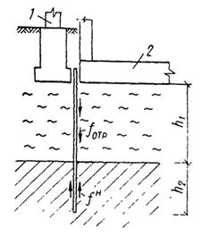
Рис. 1. Разъединительная шпунтовая стенка
1 - существующее здание, 2 - строящееся здание
где h1 - уплотняющаяся толща грунтов, в пределах которой
развиваются силы отрицательно направленного трения (вниз); h2 - глубина погружения
шпунта в толщу грунтов, обладающих модулем деформации Е ³ 100 кгс/см2 при возводимых зданиях не
более этажей и Е ³ 200 кгс/см2 при более высоких зданиях; h1i и h2i -
толщина отдельных слоев грунта в пределах h1 и h2 соответственно; 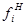
где mотр - коэффициент условий работы, принимаемый при h1 £ 4 м равным 0,6 и при h1 > 4 м равным 0,8.
4.13. Разъединительная шпунтовая стенка должна идти вдоль всей линии примыкания фундамента возводимого здания к существующему и с каждой стороны иметь шпоры длиной в плане не менее одной четвертой части сжимаемой толщи (длины шпунта). Шпоры могут огибать фундаменты нового здания, проходить по оси разъединительной шпунтовой стенки или огибать фундамент существующего здания.
5.1. При откопке котлованов около существующих зданий должны выполняться все требования главы СНиПа III-Б-1-71 «Земляные сооружения. Общие правила производства и приемки работ» и главы СНиПа III-Б-3-62 «Открытый водоотлив и искусственное понижение уровня грунтовых вод. Правила производства и приемки работ» и указанные ниже рекомендации.
5.2. При разработке проектов производства строительных работ в зависимости от соотношений глубин проектируемого котлована hк, заложения подошвы существующих фундаментов hсф и уровня грунтовых вод hг требуется различать следующие основные случаи:
а) hк £ (hсф - 0,5 м); hк < hг.в - откопка котлованов возможна без применения специальных мероприятий;
б) (hсф - 0,5 м) £ hк £ hсф; hк < hг.в - работы по откопке котлована в пределах полосы шириной 5 м, считая от края существующего фундамента, следует производить захватками не более 1,5 м по длине примыкания;
в) hк > hг.в - до начала работ по откопке котлована необходимо забить технологический шпунт, чтобы сократить или предотвратить приток в котлован грунтовых вод. Такой шпунт должен быть погружен до подстилающего водоупора или на глубину, определяемую соотношением
где lш - необходимая длина шпунта.
Забивка указанного шпунта не гарантирует устойчивость грунтов основания существующих фундаментов, поэтому даже при наличии шпунта работы по откопке котлована и возведению фундаментов должны выполняться захватками в соответствии с п. 5.2. б;
г) hк £ hсф + 1,0 м - вдоль линии примыкания котлована к существующим фундаментам следует забить шпунт, устойчивость которого должна быть обеспечена расчетом с учетом давления, передаваемого на грунт существующими фундаментами. В соответствующих случаях подпорной стенкой может служить шпунт, Предназначенный для предотвращения притока грунтовых вод в котлован (п. 5.2. в);
д) hк > hсф + 1,0 м - независимо от соотношения hк и hг.в требуется проведение технических мероприятий по пп. 5.6 - 5.9.
5.3. При выполнении работ в соответствии с указаниями п. 5.2.6 устройство фундаментов и обратная засыпка пазух с тщательным трамбованием должны производиться в сжатые сроки, весь комплекс этих работ на одной захватке не должен превышать 2 суток.
5.4. В случае непосредственного примыкания котлована к фундаментам существующих зданий способы разработки грунта и разборки старых фундаментов, если таковые имеются на площадке строительства, должны выбираться в соответствии с напряженным состоянием грунта в основании существующих фундаментов.
Недопустимо:
а) применять шар и клин-молот для дробления мерзлого грунта и старых, подлежащих разборке фундаментов на расстоянии ближе 20 м от существующих зданий;
б) применять взрывной способ;
в) использовать экскаватор с ковшом драглайн.
5.5. При наличии грунтовых вод выше дна котлована, который откапывается без крепления стен, обязательна проверка устойчивости основания существующих фундаментов с учетом гидродинамического давления и возможности снижения расчетного давления на грунт основания.
5.6. Откопка котлована ниже подошвы существующих фундаментов допускается в исключительных случаях. При этом обязательна забивка металлического шпунта, который должен быть рассчитан не только на прочность с учетом вертикального давления, передаваемого на грунт от существующих, фундаментов, но и на деформацию в горизонтальном направлении (это особенно важно при наличии слабых грунтов).
Для обеспечения неподвижности шпунта он должен быть заанкерен с предварительным напряжением анкерных устройств или расперт постановкой распорок на клиньях или с обжатием их домкратами. Упором для распорок могут служить фундаменты строящегося здания, возведенные на некотором расстоянии от существующих фундаментов (за пределами призмы выпирания грунтов основания существующего здания) и при обеспечении устойчивости (неподвижности) откоса котлована во время возведения указанной части фундаментов. Только после надежного раскрепления шпунта и обеспечения его неподвижности возможна разработка грунта откосов.
5.7. При откопке котлованов ниже подошвы существующих фундаментов с некоторым удалением от них необходима проверка устойчивости основания загруженного фундамента, находящегося около нисходящего откоса.
5.8. В ряде случаев целесообразно устраивать фундаменты строящегося здания по способу «стена в грунте». Такие фундаменты могут быть использованы и в качестве ограждения котлована. Устройство «стены в грунте», заглубленной до водоупора, исключает приток грунтовых вод в котлован.
5.9. Щелевая разработка грунта для устройства «стены в грунте» допускается при отсутствии нагрузки на поверхности вблизи устраиваемой стены. Устройство «стены в грунте» непосредственно около существующих загруженных фундаментов рекомендуется выполнять путем бурения скважин под глинистым раствором и заполнения их бетонной смесью подводным способом. Скважины должны врезаться друг в друга на четверть диаметра.
5.10. Погружение шпунта вибропогружателем или свайным молотом допустимо при отсутствии в основании существующего здания грунтов, способных уплотняться при динамических воздействиях (песков, супесей). При наличии указанных грунтов рекомендуется шпунт вдавливать в грунт. Для этого может быть использован, например, копер «Тайвуд BSP» или механизм аналогичного типа.
Для уменьшения трения при погружении металлического шпунта в грунт рекомендуется:
а) заполнять замки шпунтин перемятой пластичной глиной или тавотом;
б) применять электроосмос;
в) использовать раствор тиксотропной бентонитовой глины;
г) уменьшать трение шпунта о грунт полимерными или другими смазками.
5.11. На площадках, сложенных рыхлыми и средней плотности песками и супесями, способными уплотняться при динамических воздействиях, забивка или вибропогружение шпунта допустимы лишь на расстоянии более 20 м от фундаментов существующих зданий. При меньших расстояниях до погружения шпунта динамическими методами необходимо производить закрепление песков и супесей, исключающее их уплотнение под воздействием динамики. Закрепление грунтов должно производиться по специальному проекту.
5.12. Для сохранения природной структуры грунтов в основании возводимого здания в определенных условиях целесообразно применение иглофильтровых установок. Погружение иглофильтров в грунт методом размыва допускается на расстоянии от края существующего фундамента, большем разности между отметками подошвы фундамента и низа иглофильтра. При этом иглофильтры, погружаемые в пылеватые и тонкие пески и супеси, должны обсыпаться крупным или средней крупности песком. При расстоянии меньше указанного иглофильтры должны устанавливаться в пробуренные скважины, обсыпанные крупным или средней крупности песком.
Во время извлечения иглофильтров размывом образующиеся скважины должны засыпаться крупным песком.
5.13. При близком расположении иглофильтров к существующим фундаментам недопустимо вымывание пылеватых и тонкопесчаных частиц грунта. Поэтому после начала водоотлива через 2 и 6 часов следует проверить наличие таких частиц в откачиваемой воде. При обнаружении таких частиц иглофильтры необходимо переставить в новые скважины, оборудованные обратным фильтром.
6.1. При забивке свай около существующих зданий возникают колебания надземных конструкций этих зданий, на которые они обычно не рассчитаны, и грунтов оснований, что может вызвать повреждение конструкций, уплотнение грунтов или потерю устойчивости грунтов с выпиранием их из-под подошвы фундаментов, дополнительную просадку или осадку основания с аварийными последствиями. Поэтому проекты свайных фундаментов, устраиваемых возле существующих зданий, должны быть разработаны с учетом возможных последствий от забивки свай и содержать мероприятия, позволяющие избежать развития недопустимых деформаций конструкций зданий.
6.2. Для исключения недопустимых деформаций конструкций зданий допускается применение забивных свай на расстояниях, превышающих 20 м от существующих зданий.
На расстояниях, меньших 20 м, рекомендуется применять набивные сваи, устройство которых не требует интенсивных динамических воздействий. Длина набивных свай должна быть равна длине забивных, если основная часть фундаментов делается из забивных свай.
6.3. В ряде случаев возможно применение готовых свай, погружаемых в грунт вдавливанием.
6.4. Погружение вдавливанием и изготовление набивных свай рекомендуется начинать со свай, наиболее близко расположенных к существующим фундаментам. При таком порядке производства работ эти сваи будут служить антисейсмическим экраном при изготовлении или вдавливании остальных свай.
6.5. Забивка свай на расстояниях, меньших 20 м, допускается в исключительных случаях на площадках, в пределах которых нет грунтов, уплотняющихся при динамических воздействиях: песков рыхлых, песков средней плотности и супесей. При этом требуется проведение специальных испытаний и последующих обследований, которые должны доказать, что при забивке свай не происходит обрушение элементов конструкций (штукатурки, карнизов и пр.). При опасности таких обрушений в период свайных работ помещения в зданиях должны быть освобождены от людей. В последнем случае в смету должны быть включены средства на покрытие расходов, связанных с ремонтно-восстановительными работами.
6.6. Для уменьшения динамических воздействий при погружении свай рекомендуется применять тяжелые сваебойные агрегаты, сбрасывая тяжелые свайные молоты с небольшой высоты (менее 50 см).
* Расчет осадок фундаментов методом ограниченной сжимаемой толщи подробно изложен в книгах:
1. Далматов Б.И. Расчет оснований зданий и сооружений по предельным состояниям. Л., Стройиздат, 1968.
2. Далматов Б.И. и др. Проектирование фундаментов зданий и промышленных сооружений. М., «Высшая школа», 1969.
3. Далматов Б.И., Лапшин Ф.К., Россихин Ю.В. Проектирование свайных фундаментов в условиях слабых грунтов Л., Стройиздат, 1975.
Грунты получают деформации уплотнения лишь в пределах ограниченной толщи, так как с глубиной напряжения рассеиваются и их величина уменьшается настолько, что уплотнения грунтов не происходит. Это дает основание считать, что ниже некоторой глубины залегает практически несжимаемый грунт независимо от его деформационных свойств. Поэтому важно рассмотреть деформации лишь в пределах ограниченного слоя грунта, подстилаемого условно несжимаемой породой. Толщину сжимаемого слоя называют расчетной сжимаемой толщей Hp.
Если известна величина Hp, то осадка загруженного фундамента, как показал К.Е. Егоров, находится из выражения
где w - коэффициент осадки, зависящий от формы подошвы, жесткости фундамента и отношения Hp/b; b - ширина площади загружения условного фундамента; µ - коэффициент Пуассона грунта; Е - модуль общей деформации грунта, pд - средняя интенсивность давления по площади загружения, под влиянием которой грунт уплотняется.
Здесь pII - среднее давление от расчетных нагрузок при расчете по деформациям; γII’ - объемный вес (масса) грунта выше отметки подошвы фундамента; h - глубина заложения фундамента от природной отметки.
Выражение (1) можно привести к виду
где а0т - среднее значение коэффициента относительной сжимаемости грунта в пределах толщи Hр; Нэ - величина эквивалентной сжимаемой толщи; при этом
Величины μ и А приводятся в табл. 1.
Значения коэффициента осадки с учетом жесткости фундамента ωж приводятся в табл. 2.
Поскольку ωж является функцией отношения Hр:b, для нахождения осадки надо предварительно определить Hр. При полном загружении основания можно принять
Тогда
где А - коэффициент при μ = 0, А = 1,0; ωр - коэффициент расчетной сжимаемой толщи; by - условная ширина подошвы фундамента, соответствующая случаю полной загрузки основания, т.е. при
где R - расчетное давление на грунт основания; γ’II - объемный вес (масса) грунта в пределах глубины заложения подошвы фундамента h.
Значение bу определяется из выражения
где h - ширина подошвы рассчитываемого фундамента,
Значения коэффициентов µ, A, b, kБ
|
Вид грунта |
||||||||
|
не имеющий бокового расширения |
гравий и галька |
пески |
суглинки пластичные |
тяжелые сильнопластичные глины |
||||
|
твердые глины и суглинки |
супеси |
глины пластичные |
||||||
|
µ |
0,1 |
0,1 |
0,2 |
0,25 |
0,27 |
0,30 |
0,35 |
0,40 |
|
A |
1,0 |
1,012 |
1,067 |
1,125 |
1,158 |
1,225 |
1,408 |
1,800 |
|
b |
1,0 |
0,98 |
0,90 |
0,83 |
0,80 |
0,74 |
0,62 |
0,47 |
|
kБ |
0,863 |
0,874 |
0,921 |
0,971 |
1,000 |
1,057 |
1,216 |
1,554 |
Значения коэффициента осадки wж
|
Круг |
Прямоугольник с отношением сторон l:b |
||||||
|
1 |
1,5 |
2 |
3 |
5 |
³ 10 |
||
|
0 |
0 |
0 |
0 |
0 |
0 |
0 |
0 |
|
0,1 |
0,089 |
0,089 |
0,091 |
0,091 |
0,091 |
0,093 |
0,093 |
|
0,25 |
0,209 |
0,209 |
0,214 |
0,216 |
0,217 |
0,221 |
0,223 |
|
0,5 |
0,368 |
0,372 |
0,395 |
0,398 |
0,405 |
0,414 |
0,419 |
|
1,0 |
0,537 |
0,562 |
0,630 |
0,650 |
0,677 |
0,702 |
0,717 |
|
1,5 |
0,614 |
0,656 |
0,756 |
0,797 |
0,847 |
0,893 |
0,922 |
|
2,0 |
0,650 |
0,711 |
- |
0,894 |
0,968 |
- |
1,080 |
|
2,5 |
0,687 |
0,738 |
0,878 |
0,940 |
1,042 |
1,127 |
1,179 |
|
3,5 |
0,721 |
0,777 |
0,935 |
1,019 |
1,139 |
1,263 |
1,345 |
|
5,0 |
0,760 |
0,806 |
0,979 |
1,075 |
1,219 |
1,384 |
1,520 |
|
10,0 |
- |
0,840 |
- |
1,145 |
1,322 |
- |
1,784 |
|
25,0 |
0,771 |
0,858 |
- |
1,182 |
1,378 |
- |
1,972 |
|
|
0,789 |
0,873 |
1,082 |
1,210 |
1,422 |
1,713 |
2,109 |
Здесь a0m - средний коэффициент относительной сжимаемости для расчетной сжимаемой толщи Нр; ao1 - коэффициент относительной сжимаемости грунта, для которого определено значение R.
Значения произведения коэффициентов 2Awр для формулы (7) даны в табл. 3.
Значения 2 Awp
|
Отношения сторон подошвы фундамента l:b |
|||||||
|
1 |
1,5 |
2 |
3 |
5 |
7 |
10 |
|
|
1,11 |
1,20 |
1,52 |
1,65 |
1,88 |
2,03 |
2,14 |
2,27 |
Таким образом, если известно bу, то, приняв 2Awp по табл. 3, найдем Нр. Это дает возможность определить Hэ по формуле (4) и осадку - по формуле (3), если грунт однороден.
При слоистом напластовании грунтов в основании в пределах Hр предварительно находят среднее значение коэффициента относительной сжимаемости грунта по формуле
где hi - мощность i-го слоя в пределах Hр; a0m - коэффициент относительной сжимаемости грунта i-го слоя; zi - расстояние от нижней границы расчетной сжимаемой толщи до середины i-го слоя (рис. 2); п - число слоев в пределах расчетной сжимаемой толщи.
Если в пределах толщи Hр на глубине Hф залегает практически несжимаемый грунт (например скальная порода), то
Теперь обратим внимание на то, что для нахождения a0m необходимо знать Нр. В то же время для определения Нр следует знать а0т, зависящее от Нр. Поэтому приходится решать задачу, задаваясь двумя значениями Н1 и Н2, удовлетворяющими условию
Рис. 2. Схема к определению среднего значения коэффициента относительной сжимаемости
Рис. 3. Схема к определению Нр
Тогда для значений Н1 и H2 можно найти:
Обозначения, входящие в эти формулы, показаны на рис. 3.
Зная a0m1 и а0т2, найдем условную ширину подошвы фундамента и расчетную мощность сжимаемой толщи для случаев H1 и H2.
Здесь wж1 и wж2 - коэффициенты осадки, принимаемые по табл. 2 в зависимости от соотношения сторон подошвы фундамента и соответственно отношений Н1:by1 и H2:by2, цифра 2 в формуле (17) соответствует значению 2А при μ = 0.
Путем линейной интерполяции при известных HР1 и Hр2 найдем
Для определения осадки фундамента с учетом влияния загружения соседних площадей (фундаментов) строятся кольцевые графики в масштабе 1:200 для Hр, равных 5, 7, 10, 15, 20 и 30 м при μ = 0,27. Графики строятся по значениям радиуса окружностей по табл. 4.
Кроме того, на графики наносятся лучи, делящие окружности на 40 равных частей.
На построенные таким образом кольцевые графики накладывают план подошвы фундаментов, вычерченный в масштабе графиков (1:200), совмещая их центр с центром рассчитываемого фундамента. О влиянии загружения соседнего фундамента судят по количеству точек пересечения. При этом учитывают отношение интенсивностей загружения каждого соседнего фундамента к интенсивности давления рассчитываемого и коэффициент бокового расширения грунта μ.
Поскольку величина расчетной сжимаемой толщи зависит от интенсивности давленая по подошве соседних фундаментов, приходится также задаваться двумя значениями сжимаемой толщи H1 и H2, для которых заранее построены кольцевые графики. При этом исходят из условия (14).
Для принятых значений H1 и H2 аналогично (17) вычисляют расчетную мощность при загружении рассчитываемого фундамента
Затем план подошвы фундаментов, вычерченный на кальке, накладывают на кольцевые графики H1 и H2, как указано выше, и подсчитывают количество точек, приходящихся на условную подошву каждого соседнего фундамента. Загружение фундаментов, располагающихся за пределами соответствующего кольцевого графика при данной сжимаемой толще, на осадку рассчитываемого фундамента практически не влияет. Найдя количество точек для каждого (i-го) фундамента, определяют Hp1 и Hp2 с учетом (19).
Таблица 4
Таблица значений радиусов при μ = 0,27
|
Мощность слоя H, м |
Радиусы, м |
|||||||||
|
5 |
0,24 |
0,58 |
1,00 |
1,47 |
2,05 |
2,78 |
3,90 |
- |
- |
- |
|
7 |
0,24 |
0,57 |
0,95 |
1,38 |
1,85 |
2,37 |
2,97 |
3,69 |
4,61 |
6,0 |
|
10 |
0,23 |
0,56 |
0,93 |
1,32 |
1,74 |
2,18 |
2,66 |
3,17 |
3,74 |
4,36 |
|
5,07 |
5,91 |
6,93 |
8,31 |
10,87 |
|
- |
- |
- |
- |
|
|
15 |
0,23 |
0,55 |
0,91 |
1,28 |
1,67 |
2,07 |
2,49 |
2,92 |
3,38 |
3,85 |
|
4,35 |
4,88 |
5,45 |
6,05 |
6,70 |
7,40 |
8,18 |
9,00 |
10,07 |
11,27 |
|
|
12,79 |
14,99 |
- |
- |
_ |
- |
- |
- |
- |
- |
|
|
20 |
0,23 |
0,55 |
0,90 |
1,26 |
1,64 |
2,02 |
2,42 |
2,83 |
3,24 |
3,67 |
|
4,12 |
4,58 |
5,05 |
5,55 |
6,06 |
6,60 |
7,16 |
7,75 |
8,37 |
9,03 |
|
|
9,74 |
10,50 |
11,32 |
12,22 |
13,22 |
14,36 |
15,69 |
17,29 |
19,41 |
22,83 |
|
|
30 |
0,23 |
0,54 |
0,89 |
1,25 |
1,61 |
1,98 |
2,36 |
2,74 |
3,13 |
3,52 |
|
3,93 |
4,34 |
4,75 |
5,18 |
5,61 |
6,06 |
0,51 |
6,98 |
7,45 |
7,94 |
|
|
8,44 |
8,95 |
9,48 |
10,02 |
10,59 |
11,17 |
11,77 |
12,39 |
13,04 |
13,71 |
|
|
14,42 |
15,16 |
15,93 |
16,76 |
17,63 |
18,56 |
19,56 |
20,64 |
21,82 |
23,14 |
|
|
24,62 |
26,34 |
28,40 |
31,05 |
35,02 |
- |
- |
- |
- |
- |
|
где Кб - коэффициент, учитывающий боковое расширение грунта для расчетной сжимаемой толщи, принимаемый (при μ = 0) равным 0,863, j - количество соседних фундаментов, влияющих на осадку рассчитываемого; пi1, ni2 - количество точек кольцевого графика, приходящееся на i-й соседний фундамент (точки, попадающие на контур соседнего фундамента, принимаются за половину точки); k’нi - коэффициент отношения нагрузок
где рдi - давление по подошве соседнего i-го фундамента, под действием которого уплотняются грунты основания. В рдi не входит природное давление, не вызывающее уплотнения грунтов.
Зная Hp1 и Hp2, путем линейной интерполяции находят расчетную сжимающую толщу по (18).
Полученное значение Нр должно удовлетворять условию (14). В противном случае производят повторно расчет при новых значениях H1 и H2.
Найдя Нр, определяют мощность эквивалентного слоя
где Hэф - мощность эквивалентного слоя, вычисляемая по формуле (4); Кб - коэффициент, принимаемый в зависимости от μ по табл. 1; ni - количество точек, учитываемых при данном значении Hp, определяемое путем линейной интерполяции
Значения H1 и Н2 в этом случае принимаются исходя из удовлетворения условия (14) применительно к постоянным кольцевым графикам.
Рис. 4. Схема к примеру расчета осадки
а - план подошвы фундаментов здания, 1 - проектируемое здание, 2 - существующее здание, б - график осадки равноудаленных точек фундаментов
Зная Нэ, по формуле (3) находят осадку рассчитываемого фундамента.
Для расчета осадок фундаментов существующего здания поступают аналогично. Прежде всего находят наибольшее значение Нр для фундаментов нового здания с учетом затруднения соответствующих новых фундаментов. Затем принимают, что грунты в пределах этой толщи деформируются как под возводимым, так и под существующим зданиями.
При известном значении Hp по формулам (12) или (13) определяют среднее значение коэффициента относительной сжимаемости с учетом уплотненного состояния грунтов под существующими фундаментами а0ту. Этот учет легче всего произвести по компрессионным кривым, приняв во внимание уплотненность грунта под нагрузкой от существующего здания.
План, на котором изображены фундаменты или стена существующего здания и подошвы новых фундаментов, накладывают на соответствующие кольцевые графики, построенные для H1 и H2, удовлетворяющих условию (14), и подсчитывают количество точек пересечения, попадающих на подошву новых фундаментов. Это дает возможность подсчитать n1 и n2 и, следовательно, определить ni для формулы (23), которая после совмещения с формулой (22) будет иметь вид
В данном случае Hэф = 0.
Зная Hэ, легко по формуле, аналогичной (3), найти осадку
Если новое здание обладает жесткостью в продольном направлении, то ее можно учесть путем принятия концентрации давления у торца здания. В таком случае величина kнi должна учитывать эту концентрацию.
Пример расчета осадки фундаментов методом ограниченной сжимаемой толщи
Около существующего пятиэтажного здания с продольными несущими стенами, план подошвы фундаментов которых изображен на рис. 4а, проектируется девятиэтажное здание с поперечными несущими стенами. Необходимо найти осадку проектируемого и существующего зданий в точках 1 - 8.
По данным инженерно-геологических изысканий и проекта установлено следующее:
1) подошва новых фундаментов расположена на глубине заложения существующих фундаментов - 2 м;
2) под фундаментами залегают последовательно слои: 1 - мелкий песок мощностью слоя 2 м; 2 - супесь с растительными остатками (7 м); 3 - глина ленточная (8 м); 4 - мореный суглинок, мощность слоя не установлена, но более 20 м;
3) коэффициенты относительной сжимаемости по компрессионным кривым в пределах фактических изменений давлений приведены в табл. 5.
|
Наименование грунта |
Коэффициент относительной сжимаемости а0, см2/кгс |
||
|
под новым зданием |
под существующим зданием |
||
|
1 |
Песок |
0,0025 |
0,0020 |
|
2 |
Супесь |
0,0050 |
0,0040 |
|
3 |
Глина |
0,0075 |
0,0060 |
|
4 |
Суглинок |
0,0015 |
0,0012 |
4) расчетное давление на грунт основания R и давление по подошве проектируемого фундамента при расчете по деформации равно 2,0 кгс/см2; объемный вес (масса) грунта γII’ = 1,7 т/м3.
Весь расчет выполняем в соответствии с методикой, изложенной выше.
Для определения расчетной мощности сжимаемой толщи в точке 1, расположенной на пересечении осей симметрии здания, зададимся H1 = 2000 см и H2 = 3000 см. Найдем для этих толщ осредненные значения коэффициента относительной сжимаемости по формуле
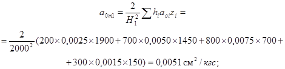 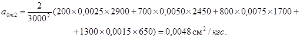
Здесь hi - толщина слоя; zi - расстояние от середины слоя до низа сжимаемой толщи; аoi - сжимаемость i-го слоя.
Выделим ленту под поперечную стену как жесткий фундамент со сторонами подошвы b = 320 см, l = 1360 см.
Определим ширину условного фундамента применительно к H1 и H2:
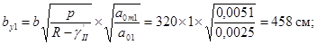
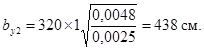
Найдем wж1 и wж2 по табл. 2 при l:b = 4,25, произведя интерполяцию:
для 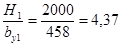
для 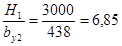
Вычислим расчетные мощности сжимаемых толщ от загрузки только фундамента поперечной стены для случаев 1 и 2:
Hрф1 = 2wж1by1 = 2 ´ 1,277 ´ 458 = 1170 см;
Hрф2 = 2wж2by2 = 2 ´ 1,372 ´ 438 = 1202 см.
Теперь, наложив план подошвы фундаментов, вычерченный на кальке в масштабе 1:200, на кольцевые графики (Б.И. Далматов, 1968) для H1 = 2000 см и H2 = 3000 см так, чтобы центр графиков совпал с точкой 1, подсчитаем количество точек пересечений, попадающих на план подошвы всех соседних проектируемых фундаментов; в результате получим n1 = 317 и n2 = 412.
Теперь найдем:
Hp1 = Hрф1 + 4КбΣnikнi = 1170 + 4 ´ 0,863 ´ 317 ´ 1 = 2264 см;
Hр2 = 1202 + 4 ´ 0,863 ´ 412 ´ 1 = 2624 см.
Здесь Кб - коэффициент, зависящий от коэффициента бокового расширения грунта и принимаемый по табл. 1. Коэффициент k’нi при давлении по подошве, равном расчетному давлению на грунт основания, равен 1.
Расчетную мощность сжимаемой толщи определяем по линейной интерполяции по формуле
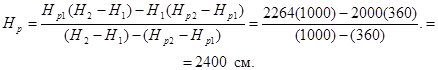
Теперь найдем для мощности Hр = 2400 см средний коэффициент относительной сжимаемости
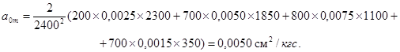
Зная а0т и приняв среднее значение коэффициента бокового расширения грунта μ = 0,30, определим осадку точки 1 с учетом загружения соседних фундаментов. Для этого найдем мощность эквивалентного слоя по формуле
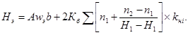
По табл. 1 А = 1,225; по табл. 2 при l:b = 4,25 и Нp. b = 2400 : 320 = 7,5 найдем интерполяцией wж =1,389. Тогда при kнi = 1
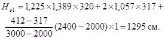
Осадка точки 1 будет
S1 = Hэa0mpд= 1295 ´ 0,0050 ´ (2,0 - 200 ´ 0,0017) = 10,7 см.
Аналогично получим для точек 2, 3 и 4 значения Нэ, а затем соответствующие осадки:
S2 = 10,2 см; S3 = 9,7 см; S4 = 7,5 см.
Поскольку грунт под существующим зданием давно уплотнился, определяем для Hр средний коэффициент относительной сжимаемости с учетом уплотненного состояния:
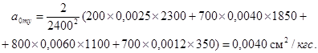
Далее определяем мощность эквивалентного слоя для точек 5 - 8 при Нр = 2400 см по формуле
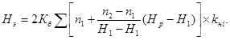
С этой целью план фундаментов на кальке накладываем на кольцевые графики для Н1 = 2000 см и Н2 = 3000 см, совмещая соответствующую точку плана с центром графиков и определяем количество точек пересечений графиков n1 и n2 в пределах подошвы проектируемого здания. Для точки 5 найдем
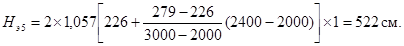
Следовательно, осадка точки 5 будет
S5 = Hэ5a0mypд = 522 ´ 0,0040 ´ 1,66 = 3,5 см.
Аналогично получим:
S6 = 2,0 см; S7 = 0,9 см; S8 = 0,5 см.
Строим график профиля осадки (рис. 4б).
СОДЕРЖАНИЕ